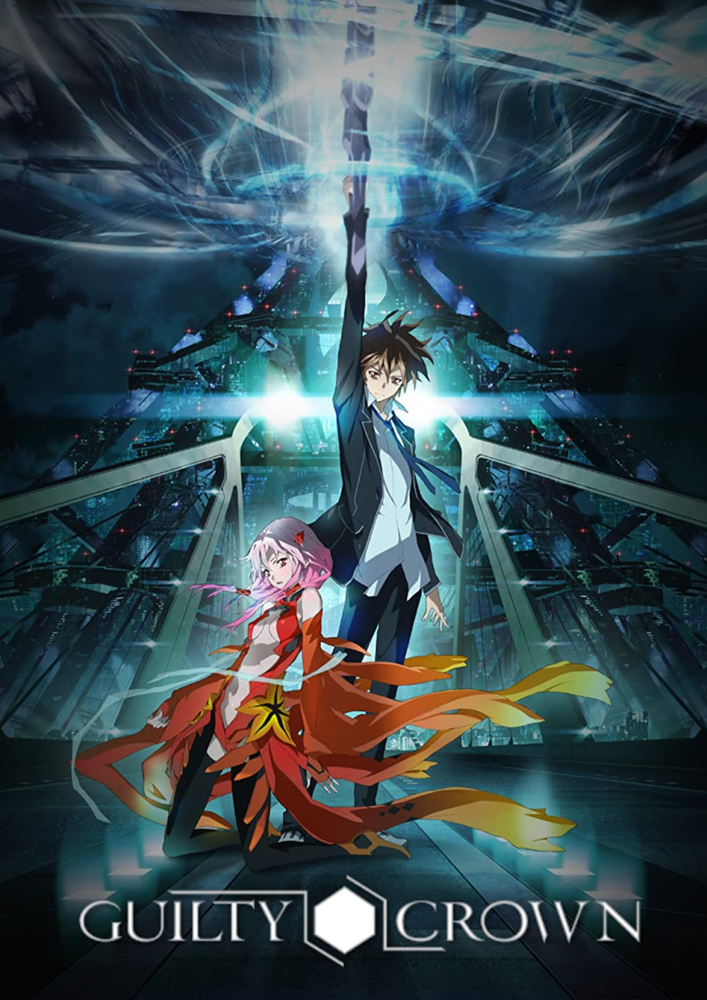
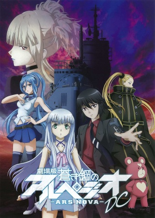

The Promised Neverland
The Promised Neverland
TV (12 eps)
Emma, Norman, Ray, and many other "siblings" live at an isolated orphanage cut off from the outside world. They live a charmed life surrounded by friends and watched over by Mama, their caretaker, until they leave the house for a foster family by the age of twelve. The only rule is that they must never venture outside of the gate that isolates them from the rest of society, for dangers await. But one day, the children learn the true horror of what's in store for their short lives...
Source: Anime-Planet
 Dr. Stone
Dr. Stone
TV (24 eps)
Several thousand years after a mysterious phenomenon that turns all of humanity to stone, the extraordinarily intelligent, science-driven boy, Senku Ishigami, awakens. Facing a world of stone and the total collapse of civilization, Senku makes up his mind to use science to rebuild the world. Starting with his super strong childhood friend Taiju Oki, who awakened at the same time, they will begin to rebuild civilization from nothing... Depicting two million years of scientific history from the Stone Age to present day, the unprecedented crafting adventure story is about to begin!
Source: Crunchyroll

Guilty Crown
TV (22 eps)
In the near future, the outbreak of a terrible disease called the Apocolypse Virus places Japan under the military rule of a global organization called the GHQ - a group tasked with checking the spread of the virus and administering vaccinations. Apathetic high school student Shuu Ouma lives in Tokyo, spending his days editing videos and trying to be left alone. But things change when he meets the beautiful pop idol, Inori, who is on the run from GHQ soldiers. While trying to save her from her captors, he acquires a mysterious power called the Void Gene that allows him to pull items or weapons from anyone under the age of seventeen.
Source: Anime-Planet

Aoki Hagane no Arpeggio: Ars Nova
TV (12 eps)
In the year 2039, global warming has caused a sudden rise in sea level, leading mankind to lose a great deal of land territory. At the same time, a fleet of mysterious warships clad in mist, known as the "Fleet of Fog," begin to appear throughout the world's seas, attacking humanity's warships with their powerful superweapons. Humanity threw all the military strength it possessed at the Fleet of Fog in a decisive battle, but was crushed by the fleet's overwhelming might...
Source: Crunchyroll